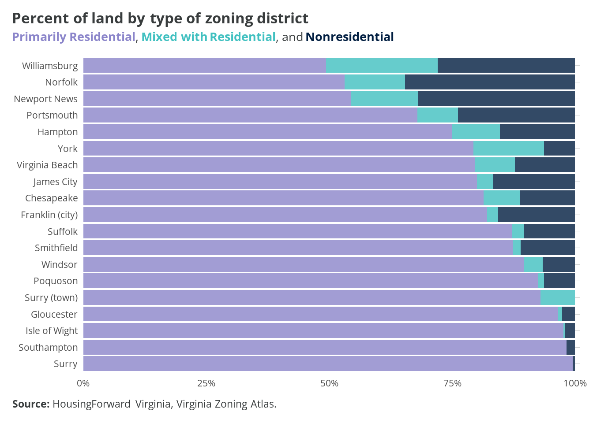

5 Zoning in Hampton Roads
5.1 Key Findings
5.2 Housing Market


5.3 Income and Wages
5.4 Zoning’s impact in Hampton Roads
With increasing housing affordability issues across the region, a diverse and growing supply of housing is needed to meet the needs of a diverse population. Localities have significant control over their supply through their zoning ordinances.
The following findings are based on the Zoning Atlas Methodology and takes into account the impact of federally-owned lands and wetland areas, which are both prevalent throughout the region. Like our colleagues in New Hampshire, we have sought to exclude areas of land that are not unbuildable. We have excluded all federal land from calculations, as well as area of wetlands and/or water that are 10 continguous area or more.
Federal lands were identified using ESRI Landscape’s USA Federal Lands feature layer, which accounted for lands managed by six federal agencies, including:
- Bureau of Land Management
- Department of Defense
- National Park Service
- US Fish and Wildlife Service
- US Forest Service
Wetland/water areas were identified using the U.S. Fish & Wildlife Service’s Seamless Wetlands Data. The wetlands polygon was used and allow polygons with an area of 10 acres or more were utilized as a mask layer to clip from our Hampton Roads zoning district layer file.

5.4.1 Single-Family Detached Housing

5.4.2 By-Right Housing
| Jurisdiction | Single-family | 2-family | 3-family | 4+-family |
|---|---|---|---|---|
| Chesapeake | 79% | 4% | 4% | 4% |
| Franklin (city) | 84% | 13% | 1% | 1% |
| Gloucester | 97% | 0% | 0% | 0% |
| Hampton | 85% | 7% | 1% | 1% |
| Isle of Wight | 97% | 1% | 0% | 0% |
| James City | 65% | 1% | 1% | 1% |
| Newport News | 59% | 12% | 16% | 17% |
| Norfolk | 56% | 12% | 22% | 23% |
| Poquoson | 88% | 1% | 1% | 1% |
| Portsmouth | 70% | 16% | 16% | 1% |
| Smithfield | 89% | 0% | 3% | 3% |
| Southampton | 98% | 0% | 0% | 0% |
| Suffolk | 88% | 2% | 1% | 1% |
| Surry | 100% | 0% | 0% | 0% |
| Surry (town) | 93% | 1% | 1% | 1% |
| Virginia Beach | 81% | 11% | 6% | 6% |
| Williamsburg | 63% | 13% | 10% | 10% |
| Windsor | 90% | 3% | 3% | 3% |
| York | 79% | 1% | 1% | 1% |